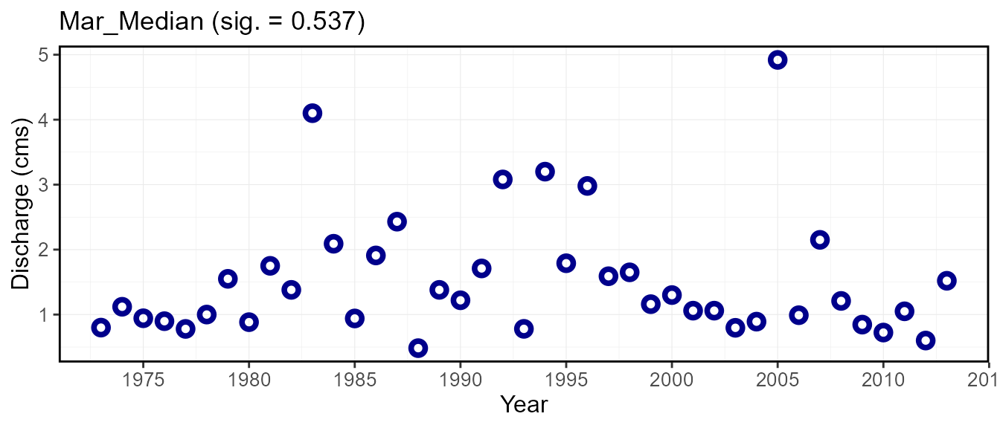

Computing Annual Trends with fasstr
Source:vignettes/fasstr_trending_analysis.Rmd
fasstr_trending_analysis.RmdThe Flow Analysis Summary Statistics Tool for R (‘fasstr’) is a set of R functions to tidy, summarize, analyze, trend, and visualize streamflow data. This package summarizes continuous daily mean streamflow data into various daily, monthly, annual, and long-term statistics, completes annual trends and frequency analyses, in both table and plot formats.
This vignette documents the usage of the compute_annual_trends() function in ‘fasstr’. This vignette is a high-level adjunct to the details found in the function documentation (see ?compute_annual_trends()). You’ll learn what arguments to provide to the function to customize your analysis, what analyses are computed, and what outputs are produced.
Overview
Computing an annual trending analysis with ‘fasstr’ allows for options and customization of both the inputs and outputs. This function takes 107 annual streamflow metrics (calculated using other annual ‘fasstr’ functions) and calculate non-parametric trends using the ‘zyp’ R package. See the ‘zyp’ documentation for more information on the methods.
Each annual metric/time-series is analyzed for trends using Trend-Free-Pre-Whitening to remove lag-1 correlation (may artificially detect a significant trend). The slope of each metric over time is estimated using the Theil-Sen approach. If the estimated slope is different from zero, then the data are detrended by the slope and the AR(1) 1s calculated for the detrended time series. The residuals and the trend are combined and then tested for significance using the Mann-Kendall trend test.
The trending function results in a list containing two tibble data frame outputs and, if selected, a trends plot for each metric.
- Annual_Trends_Data - data used for analysis calculated from various annual ‘fasstr’ functions
- Annual_Trends_Results - results of the ‘zyp’ trending analysis, and includes various other statistics
- ‘Sep_Maximum’ - an example of each of 107 plots produced (one for each metric)
Function and Data Inputs
To determine annual trends from a daily streamflow data set, the compute_annual_trends() function will take daily data, either from HYDAT using the station_number argument or your own data frame of data using the data argument to complete the analysis. To complete a custom trends analysis of data please see the ‘zyp’ functions for more information.
Usage, Options, and Outputs
Analysis Data
This function is provided to calculate trends on a multitude of annual metrics, as calculate by various annual and monthly ‘fasstr’ functions. The functions will calculate metrics from each of the following functions:
-
calc_annual_stats()- calculate annual summary statistics -
calc_annual_cumulative_stats()- calculate annual and seasonal cumulative flows, both volume and yield -
calc_annual_flow_timing()- calculate annual flow timing -
calc_annual_lowflows()- calculate annual lowflows -
calc_annual_outside_normal()- calculate annual days above and below normal -
calc_monthly_stats()- calculate annual monthly summary statistics
While each of the different metrics have default variables for their arguments, many of them can be customized. The following table shows which arguments are used for which statistics and what the defaults are. See the documentation for more information.
| Argument | Corresponding Function | Default |
|---|---|---|
| annual_percentiles | calc_annual_stats() | c(10,90) |
| monthly_percentiles | calc_monthly_stats() | c(10,20) |
| stats_days | calc_annual_stats() & calc_monthly_stats() | 1 |
| stats_align | calc_annual_stats() & calc_monthly_stats() | “right” |
| lowflow_days | calc_annual_lowflows | c(1,3,7,30) |
| lowflow_align | calc_annual_lowflows | “right” |
| timing_percent | calc_annual_flow_timing | c(25,33.3,50,75) |
| normal_percentiles | calc_annual_outside_normal | c(25,75) |
Examples
Example with default arguments:
compute_annual_trends(station_number = "08NM116", zyp_method = "yuepilon", start_year = 1973, end_year = 2013)
Example with custom arguments:
compute_annual_trends(station_number = "08NM116", zyp_method = "yuepilon", start_year = 1973, end_year = 2013, annual_percentiles = c(10,90), monthly_percentiles = c(10,20), stats_days = 1, stats_align = "right", lowflow_days = c(1,3,7,30), lowflow_align = "right", timing_percent = c(25,33,50,75), normal_percentiles = c(25,75))
This annual data is provided in the Annual_Trends_Data tibble objects. The following is an example of the output, including all the annual metrics and a first few years of data used for the ‘zyp’ trends analysis:
Statistic 1973 1974 1975
1 Annual_Maximum 37.700 66.000 48.700
2 Annual_Mean 3.331 8.430 5.483
3 Annual_Median 0.980 1.340 1.540
4 Annual_Minimum 0.025 0.447 0.320
5 Annual_P10 0.549 0.709 0.580
6 Annual_P90 8.832 32.980 19.580
7 Min_1_Day 0.025 0.447 0.320
8 Min_1_Day_DoY 293.000 333.000 11.000
9 Min_3_Day 0.045 0.533 0.378
10 Min_3_Day_DoY 295.000 334.000 39.000
11 Min_7_Day 0.194 0.602 0.416
12 Min_7_Day_DoY 299.000 346.000 41.000
13 Min_30_Day 0.574 0.665 0.494
14 Min_30_Day_DoY 249.000 358.000 58.000
15 Total_Volume_m3 105036393.421 265854182.477 172900396.854
16 Jan-Jun_Volume_m3 84993926.226 223662988.720 136045958.439
17 Jul-Dec_Volume_m3 20042467.195 42191193.757 36854438.415
18 Jan-Mar_Volume_m3 5734540.834 8368012.779 5258217.605
19 Apr-Jun_Volume_m3 79259385.392 215294975.941 130787740.834
20 Jul-Sep_Volume_m3 7503580.782 35216640.131 24657350.460
21 Oct-Dec_Volume_m3 12538886.413 6974553.626 12197087.955
22 Total_Yield_mm 132.121 334.408 217.485
23 Jan-Jun_Yield_mm 106.911 281.337 171.127
24 Jul-Dec_Yield_mm 25.211 53.071 46.358
25 Jan-Mar_Yield_mm 7.213 10.526 6.614
26 Apr-Jun_Yield_mm 99.697 270.811 164.513
27 Jul-Sep_Yield_mm 9.438 44.298 31.016
28 Oct-Dec_Yield_mm 15.772 8.773 15.342
29 DoY_25pct_TotalQ 138.000 135.000 146.000
30 DoY_33pct_TotalQ 141.000 146.000 153.000
31 DoY_50pct_TotalQ 151.000 158.000 162.000
32 DoY_75pct_TotalQ 172.000 173.000 177.000
33 Days_Below_Normal 230.000 69.000 129.000
34 Days_Above_Normal 15.000 75.000 30.000
35 Days_Outside_Normal 245.000 144.000 159.000
36 Jan_Mean 0.730 1.023 0.625
37 Jan_Median 0.705 1.020 0.595
38 Jan_Maximum 0.963 1.260 1.050
39 Jan_Minimum 0.595 0.864 0.320
40 Jan_P10 0.626 0.906 0.507
41 Jan_P20 0.643 0.934 0.538
42 Feb_Mean 0.670 0.985 0.490
43 Feb_Median 0.676 0.984 0.483
44 Feb_Maximum 0.728 1.060 0.614
45 Feb_Minimum 0.595 0.830 0.368
46 Feb_P10 0.619 0.944 0.407
47 Feb_P20 0.632 0.957 0.449
48 Mar_Mean 0.806 1.211 0.896
49 Mar_Median 0.799 1.120 0.943
50 Mar_Maximum 0.951 2.140 1.390
51 Mar_Minimum 0.685 0.855 0.677
52 Mar_P10 0.708 0.937 0.694
53 Mar_P20 0.736 0.983 0.716
54 Apr_Mean 1.774 7.761 1.789
55 Apr_Median 1.510 4.910 1.780
56 Apr_Maximum 3.450 28.300 3.400
57 Apr_Minimum 0.852 1.850 0.949
58 Apr_P10 0.963 1.919 0.984
59 Apr_P20 1.116 2.070 1.036
60 May_Mean 16.395 29.845 16.274
61 May_Median 15.200 30.300 16.800
62 May_Maximum 37.700 50.400 32.300
63 May_Minimum 3.450 15.900 3.340
64 May_P10 4.420 17.500 5.210
65 May_P20 5.950 20.100 6.820
66 Jun_Mean 11.863 44.460 31.853
67 Jun_Median 10.350 44.900 30.850
68 Jun_Maximum 26.900 66.000 48.700
69 Jun_Minimum 3.880 20.600 13.000
70 Jun_P10 6.104 25.610 17.240
71 Jun_P20 7.204 33.280 23.820
72 Jul_Mean 1.422 9.966 4.922
73 Jul_Median 0.926 8.210 3.450
74 Jul_Maximum 4.980 24.800 10.900
75 Jul_Minimum 0.462 2.420 1.180
76 Jul_P10 0.518 3.790 1.250
77 Jul_P20 0.561 5.380 1.460
78 Aug_Mean 0.615 1.761 2.274
79 Aug_Median 0.564 1.610 1.680
80 Aug_Maximum 1.100 3.710 5.920
81 Aug_Minimum 0.326 0.960 0.736
82 Aug_P10 0.453 1.200 0.974
83 Aug_P20 0.476 1.280 1.180
84 Sep_Mean 0.789 1.468 2.076
85 Sep_Median 0.685 1.395 1.750
86 Sep_Maximum 2.270 2.100 5.100
87 Sep_Minimum 0.399 1.130 1.390
88 Sep_P10 0.470 1.199 1.460
89 Sep_P20 0.496 1.246 1.536
90 Oct_Mean 1.630 1.231 1.845
91 Oct_Median 0.867 1.120 1.840
92 Oct_Maximum 8.070 2.080 2.210
93 Oct_Minimum 0.025 0.838 1.510
94 Oct_P10 0.113 0.867 1.650
95 Oct_P20 0.416 0.903 1.740
96 Nov_Mean 1.760 0.710 1.488
97 Nov_Median 1.485 0.711 1.400
98 Nov_Maximum 3.060 0.943 2.940
99 Nov_Minimum 1.220 0.447 0.906
100 Nov_P10 1.327 0.616 1.047
101 Nov_P20 1.350 0.633 1.128
102 Dec_Mean 1.349 0.686 1.268
103 Dec_Median 1.400 0.680 1.290
104 Dec_Maximum 1.830 0.850 1.590
105 Dec_Minimum 0.977 0.541 0.991
106 Dec_P10 1.020 0.609 1.050
107 Dec_P20 1.210 0.637 1.120To provide examples of the outputs, an analysis will be completed on a Mission Creek HYDAT station from 1973 to 2013. The argument zyp_method is described below in the Analysis Results section:
trends_analysis <- compute_annual_trends(station_number = "08NM116", zyp_method = "yuepilon", start_year = 1973, end_year = 2013)
The following is an example of the outputted Annual_Trends_Data tibble:
trends_analysis$Annual_Trends_Data
# A tibble: 107 x 43
STATION_NUMBER Statistic `1973` `1974` `1975` `1976` `1977` `1978` `1979`
<chr> <fct> <dbl> <dbl> <dbl> <dbl> <dbl> <dbl> <dbl>
1 08NM116 Annual_M~ 3.77e+1 66 48.7 71.1 36 44.5 43
2 08NM116 Annual_M~ 3.33e+0 8.43 5.48 8.18 4.38 6.75 4.40
3 08NM116 Annual_M~ 9.80e-1 1.34 1.54 3.84 1.26 3.28 1.56
4 08NM116 Annual_M~ 2.50e-2 0.447 0.320 0.736 0.564 0.532 0.411
5 08NM116 Annual_P~ 5.49e-1 0.709 0.580 0.884 0.776 0.828 0.618
6 08NM116 Annual_P~ 8.83e+0 33.0 19.6 25.6 17.2 19.7 15.9
7 08NM116 Min_1_Day 2.50e-2 0.447 0.320 0.736 0.564 0.532 0.411
8 08NM116 Min_1_Da~ 2.93e+2 333 11 38 73 55 268
9 08NM116 Min_3_Day 4.53e-2 0.533 0.378 0.741 0.627 0.630 0.416
10 08NM116 Min_3_Da~ 2.95e+2 334 39 63 252 3 269
# ... with 97 more rows, and 34 more variables: `1980` <dbl>, `1981` <dbl>,
# `1982` <dbl>, `1983` <dbl>, `1984` <dbl>, `1985` <dbl>, `1986` <dbl>,
# `1987` <dbl>, `1988` <dbl>, `1989` <dbl>, `1990` <dbl>, `1991` <dbl>,
# `1992` <dbl>, `1993` <dbl>, `1994` <dbl>, `1995` <dbl>, `1996` <dbl>,
# `1997` <dbl>, `1998` <dbl>, `1999` <dbl>, `2000` <dbl>, `2001` <dbl>,
# `2002` <dbl>, `2003` <dbl>, `2004` <dbl>, `2005` <dbl>, `2006` <dbl>,
# `2007` <dbl>, `2008` <dbl>, `2009` <dbl>, `2010` <dbl>, `2011` <dbl>,
# `2012` <dbl>, `2013` <dbl>Analysis Results
To complete a trends analysis, a variable to the zyp_method argument must be provided, either "yuepilon" or "zhang", designated the two different approaches to analyzing data for trends. See the ‘zyp’ documentation for more information on the differences between the two methods. After running the function, the results of the trending analysis will be outputted in the Annual_Trends_Results tibble data frame. See the ‘zyp’ documentation for how to interpret the results. The results tibble contains the following columns:
| Column Name | Description |
|---|---|
| Statistic | the annual statistic used for trending |
| lbound | the lower bound of the trend’s confidence interval (‘zyp’) |
| trend | the Sens’ slope (trend) per unit time (‘zyp’) |
| trendp | the Sen’s slope (trend) over the time period (‘zyp’) |
| ubound | the upper bound of the trend’s confidence interval (‘zyp’) |
| tau | Kendall’s tau statistic computed on the final detrended timeseries (‘zyp’) |
| sig | Kendall’s P-value computed for the final detrended timeseries (‘zyp’) |
| nruns | the number of runs required to converge upon a trend (‘zyp’) |
| autocor | the autocorrelation of the final detrended timeseries (‘zyp’) |
| valid_frac | the fraction of the data which is valid (not NA) once autocorrelation is removed (‘zyp’) |
| linear | the least squares fit trend on the same data (‘zyp’) |
| intercept | the intercept of the Sen’s slope (trend) (‘zyp’) |
| min_year | the minimum year used in the trending |
| max_year | the maximum year used in the trending |
| n_years | the number of years with data for trending |
| mean | the mean of all values used for trending |
| median | the median of all values used for trending |
| min | the minimum of all values used for trending |
| max | the maximum of all values used for trending |
The following is an example of the outputted Annual_Trends_Results tibble from the Mission Creek HYDAT station from 1973 to 2013:
trends_analysis$Annual_Trends_Results
# A tibble: 107 x 20
STATION_NUMBER Statistic lbound trend trendp ubound tau sig
<chr> <fct> <dbl> <dbl> <dbl> <dbl> <dbl> <dbl>
1 08NM116 Annual_M~ -0.368 5.71e-2 2.34 0.517 0.00513 0.972
2 08NM116 Annual_M~ -0.0608 -4.47e-3 -0.183 0.0476 -0.0718 0.522
3 08NM116 Annual_M~ -0.0297 -7.45e-3 -0.305 0.0100 -0.138 0.213
4 08NM116 Annual_M~ -0.00480 -2.97e-4 -0.0122 0.00450 -0.0487 0.666
5 08NM116 Annual_P~ -0.0102 -4.19e-3 -0.172 0.00300 -0.105 0.345
6 08NM116 Annual_P~ -0.211 2.05e-3 0.0839 0.218 -0.0308 0.789
7 08NM116 Min_1_Day -0.00480 -2.97e-4 -0.0122 0.00450 -0.0487 0.666
8 08NM116 Min_1_Da~ -0.5 1.74e+0 71.3 6.55 0.285 0.0100
9 08NM116 Min_3_Day -0.00460 3.45e-4 0.0142 0.00529 -0.0282 0.807
10 08NM116 Min_3_Da~ -1.65 7.57e-1 31.0 3 0.131 0.239
# ... with 97 more rows, and 12 more variables: nruns <dbl>, autocor <dbl>,
# valid_frac <dbl>, linear <dbl>, intercept <dbl>, min_year <dbl>,
# max_year <dbl>, n_years <int>, mean <dbl>, median <dbl>, min <dbl>,
# max <dbl>Annual Trends Plots
To provide the ‘fasstr’ user the ability to visualize the trends, a time-series plot for each metric is provided when include_plots = TRUE (default; set it to FALSE to produce no plots). Each plot will show the annual value for all years and if a numerical zyp_alpha value, a significance level indicating the trend exists, is provided (typically 0.05) then a trend line will also be plotted through the data. To plot no lines, set zyp_alpha = NA (default) and to plot the lines regardless of significance, set zyp_alpha = 1. The metric name along with the significance level will be included as the title of the plot.
The following plots demonstrate examples of where the zyp_alpha value is set to 0.05 and a trend is not, and is plotted, respectively.
